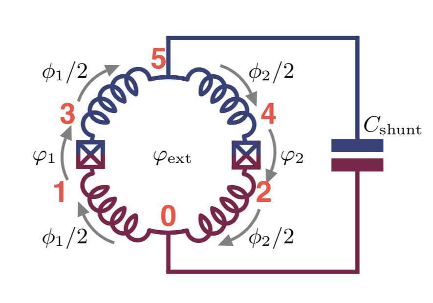
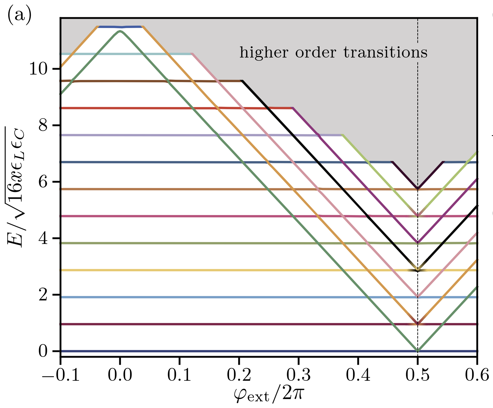
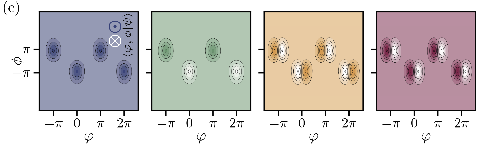
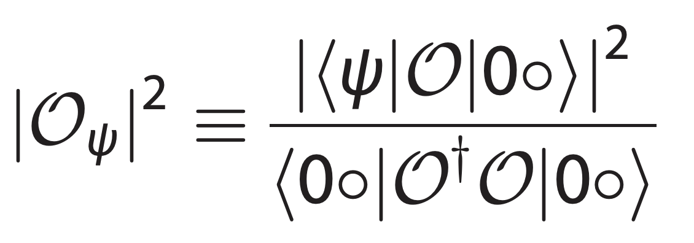
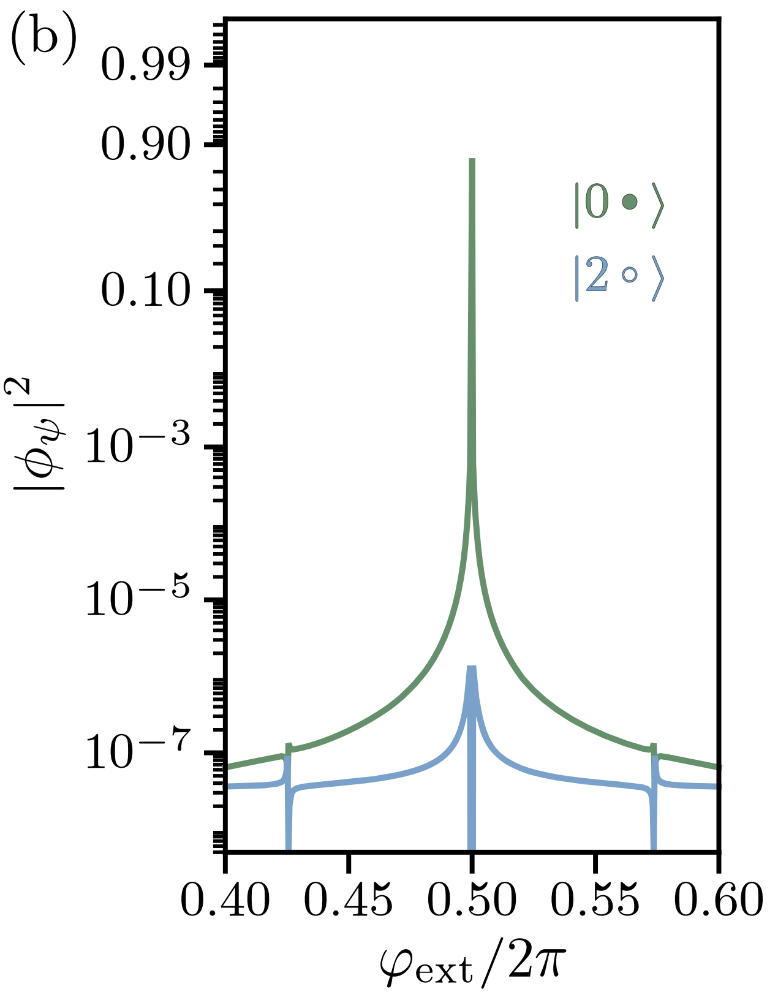

Qubit Protected by Two-Cooper-Pair Tunneling
In this notebook, we try to reproduce the result of the “Superconducting circuit protected by two-Cooper-pair tunneling” paper.
Introdcution
Smith2020 designed a qubit that is protected by two Cooper-pair tunneling. We reproduced the main results of the paper such as energy spectrum, wavefunctions, and matrix elements by use of SQcircuit. The diagram of the circuit is

The circuit consists of four equal inductors with \(E_L=2\text{GHz}\), two equal Josephson Junction with \(E_J=15\text{GHz}\) and \(E_{C_J}=2\text{GHz}\), and one shunt capacitor of \(E_{C}=0.04\text{GHz}\).
Circuit Description
Firstly, we import the SQcircuit and the relavant libraries
[1]:
import SQcircuit as sq
import matplotlib.pyplot as plt
import numpy as np
from matplotlib.colors import LinearSegmentedColormap
We define the single inductive loop of the circuit via Loop class
[2]:
loop1 = sq.Loop()
The elements of the circuit can be defined via Capacitor, Inductor, and Junction classes in SQcircuit, and to define the circuit, we use the Circuit class.
[3]:
# define the circuit elements
CJ = sq.Capacitor(2, 'GHz', Q=1e6)
Cshunt = sq.Capacitor(0.04, 'GHz')
L = sq.Inductor(2,'GHz', loops = [loop1])
JJ = sq.Junction(15,'GHz', loops = [loop1])
# define the circuit
elements = {
(0, 1): [L],
(0, 2): [L],
(1, 3): [CJ, JJ],
(2, 4): [CJ, JJ],
(3, 5): [L],
(4 ,5): [L],
(0, 5): [Cshunt]
}
cr = sq.Circuit(elements)
By creating an object of Circuit class, SQcircuit systematically finds the correct set of transformations and basis to make the circuit ready to be diagonalized.
Before setting the truncation numbers for each mode and diagonalizing the Hamiltonian, we can gain more insight into our circuit by calling the description() method. This prints out the Hamiltonian and a listing of the modes, whether they are harmonic or charge modes, and the frequency for each harmonic in GHz (the default unit). Moreover, it shows the prefactors in the Josephson junction part of the Hamiltonian \(\tilde{\textbf{w}}_k\), which helps find the modes decoupled from the
nonlinearity of the circuit.
[4]:
cr.description()
The above output shows that cr circuit has four harmonic modes with one charge mode. From Josephson Junction part of the Hamiltonian, it becomes clear that the prefactor of the first and second mode is zero for both Josephson Junctions, which means that both modes are decoupled from the other modes. We can remove them by setting their truncation number to one.
To determine the size of the Hilbert space, we specify the truncation number for each circuit mode via set_trunc_nums() method. Note that this is a necessary step before diagonalizing the circuit.
[5]:
cr.set_trunc_nums([1,1,17,17,17])
Circuit Spectrum
To generate the spectrum of the circuit, firstly, we need to change and sweep the external flux of loop1 by the set_flux() method. Then, we need to find the eigenfrequencies of the circuit that correspond to that external flux via diag() method. The following lines of code find the spec a 2D NumPy array so that each column of it contains the eigenfrequencies with respect to its external flux.
[6]:
# number of eigenvalues we aim for
n_eig=6
# array that contains the spectrum
phi = np.linspace(-0.1,0.6,50)
# array that contains the spectrum
spec = np.zeros((n_eig, len(phi)))
for i in range(len(phi)):
# set the value of the flux external flux
loop1.set_flux(phi[i])
# diagonlize the circuit
spec[:, i], _ = cr.diag(n_eig)
[7]:
E_L = 2
E_C = 2
x=0.02
plt.figure()
for i in range(n_eig):
plt.plot(phi, (spec[i, :] - spec[0, :])/np.sqrt(16*x*(E_L/2)*E_C))
plt.xlabel("$\Phi_{ext}/\Phi_0$", fontsize=13)
plt.ylabel(r"$f_i-f_0$[GHz]", fontsize=13)
plt.show()
The next cell shows the spectrum from the figure 3a of the paper, which is the same spectrum that SQcircuit calculated.

Eigenfunctions
We can get the phase space eigenfunction of a specific eigenvector of a circuit by using the eig_phase_coord() method. To calculate the eigenfunction at \(\Phi_{ext} = 0.5\Phi_0\) similar to paper, we set back the flux of our loop to \(0.5\) and diagonalize the cr again.
[2]:
loop1.set_flux(0.5)
cr.set_trunc_nums([1,1,17,17,17])
_, _ = cr.diag(n_eig=5)
We generate the eigenfunction in the phase space by eig_phase_coord() method for the first four eigen state of the circuit similar to the paper.
[9]:
# create a range for each mode
phi1 = 0
phi2 = 0
phi3 = 0
phi4 = np.linspace(-0.8,0.8,100)
phi5 = np.pi*np.linspace(-1.5,2.5,100)
# creat the grid list
grid = [phi1, phi2, phi3, phi4, phi5]
# the ground state
state0 = cr.eig_phase_coord(0, grid = grid)
# the first excited state
state1 = cr.eig_phase_coord(1, grid = grid)
# the second excited state
state2 = cr.eig_phase_coord(2, grid = grid)
# the third excited state
state3 = cr.eig_phase_coord(3, grid = grid)
[10]:
fig, axs = plt.subplots(1, 4,figsize=(16,4), sharey='row')
axs[0].pcolor(phi5, phi4, np.abs(state0.T)**2,cmap="Purples",shading='auto',label='state0')
axs[1].pcolor(phi5, phi4, np.abs(state1.T)**2,cmap="Greens",shading='auto',label='state1')
axs[2].pcolor(phi5, phi4, np.abs(state2.T)**2,cmap="Oranges",shading='auto',label='state2')
axs[3].pcolor(phi5, phi4, np.abs(state3.T)**2,cmap="Reds",shading='auto',label='state3')
for i in range(4):
axs[i].set_xlabel(r"$\varphi_4$",fontsize=13)
axs[i].legend(handletextpad=-0.1, handlelength=0.0)
axs[0].set_ylabel(r"$\varphi_5$",fontsize=13)
plt.subplots_adjust(wspace=0)

The next cell shows the eigenfunctions from the figure 3c of the paper, which is the same as what SQcircuit calculated.

Matrix Elements
Smith2020 defined the normalized matrix element as a measure of degree of freedoms to which circuit can couple. For coupling operator \(\mathcal{O}\) the normalized matrix element is

where \(|\psi\rangle\) is the eigenstates of the circuit and \(|0o\rangle\) is the ground state. We calculate the normalized matrix element for inductive coupling to inductor between node 0 and node 2 using cr.coupling_op() method.
[13]:
n_eig = 2
phi = np.linspace(0.46, 0.54, 1000)
# normalized matrix element
inductive_01 = np.zeros(len(phi))
for i in range(len(phi)):
loop1.set_flux(phi[i])
evals, estates = cr.diag(n_eig)
O = cr.coupling_op("inductive", nodes=(2,0))
norm = (estates[0].dag()*(O.dag()*O)*estates[0])[0].real
inductive_01[i] = np.abs((estates[0].dag()*O*estates[1])[0])**2/norm
[12]:
plt.semilogy(phi, inductive_01, 'green')
[12]:
[<matplotlib.lines.Line2D at 0x7fd87fcbe8e0>]
The next figure shows the same result from the figure 4a of the paper.
